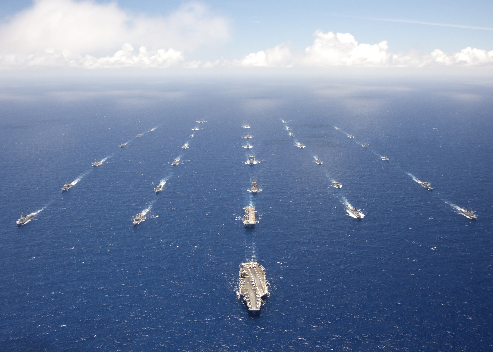
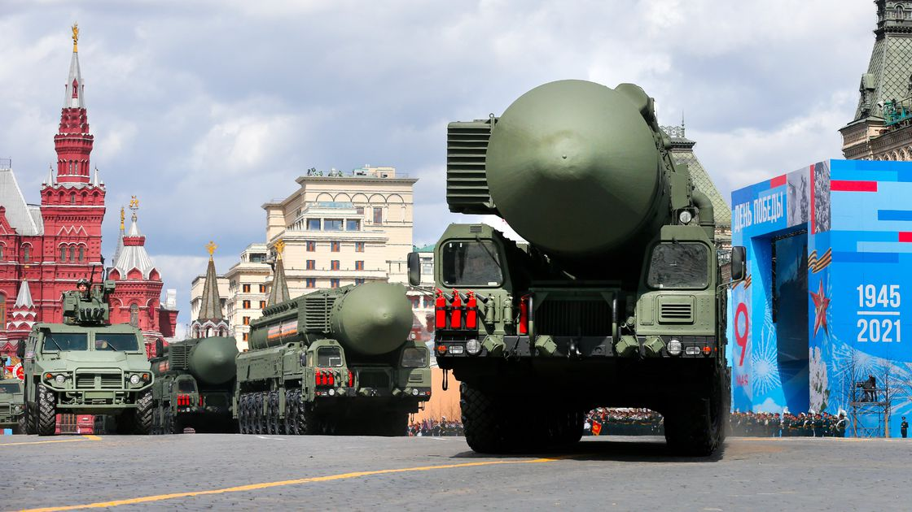
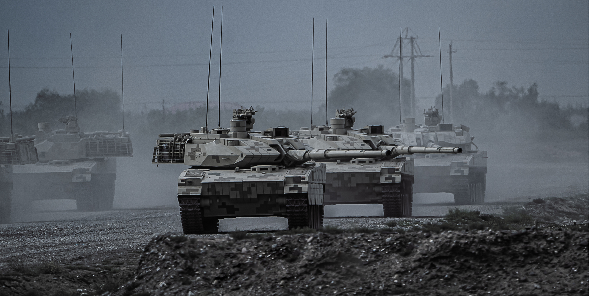

一个国家蓝星强者的流程
[前置任务] 强者之路
有一颗成为蓝星强者的心
【激活任务】
[激活任务] :
璀璨的放射
难度:中等
描述;完成一次成功的核裂变试验
奖励:无
风险:核设施一定几率遭到外科手术式打击，国家又一定概率遭到外国军队入侵。
特殊:获得debuff :制裁一进口物资减少70% ,出口物资减少50%
注:数个国家已完成该任务
2.两个太阳
难度:困难
描述:完成一成功的、200万吨当量以上的核聚变试验。
奖励:无
风险:核设施一定几率遭到外科手术式打击;有极低几率道到核打击。
特殊:获得debuff ;制裁;被核平几率提高100%
注:仅有五大常任理事国完成该任务
3.两弹合一
难度:专家
描述:成功将氢弹弹头装至远程导弹之上
奖励;国际威望*1000% ;被核平几率降低20%
风险:有一定几率遭到核打击
注:仅有中美俄完成该任务
4.命运石之门
难度：炼狱
描述：成功开发出时间机器并投入使用
奖励：国际威望*1000% ;被核平几率增加100%，有概率改写过去的历史。
风险:这是前所未有的力量，你的国家可以一次次试错，可以一次次绕开错误的选择，但是，时光机器
将成为世界所有国家争夺的焦点，你的国家将遭到所有国家的入侵，你的国家将成为战场，甚至成为新世界大战的导火索。
注：目前没有国家完成该任务。
[特殊任务] :
1.三位一体
难度:史诗
描述:成功建立完善的三位一体核打击能力
奖励:国际威望*1000% ;一定几率获得联合国安理会常任
理事国席位;被核平几率降低100% (剩余80%)
注:仅有中美俄完成该任务
2.反导系统
难度:地狱
描述:成功建立完善的弹道导弹防御体系
奖励:联合国安理会常任理事国席位*1 ;国际威望*5000% ;被核平几率降低60%
注:尚未有任何国家(包括常任理事国)完成该任务
3.联合国军
难度;困难
描述:将逼近国境线的联合国军(至少满足五常之三及十个以上国家参加)击退至据国境线300千米处,且坚持三年。
奖励: 一定几率获得联合国安理会常任理事国席位;国际威望*2000%
风险:一定几率被核平
注:中华人民共和国曾于1950-1953年于朝鲜完成该任务
4.苏联铁骑
难度;困难
描述：将逼近国境线的苏联两支由第三代主战坦克和先进武装直升飞机的装甲部队全部歼灭，并摧毁海参崴苏联后勤基地，将苏联太平洋舰队全部沉在海里。
沿西伯利亚大铁路沿线进攻，直到苏联被迫坐下来与您谈判。
奖励：国际威望*1000% ;一定几率获得联合国安理会常任。部分苏联肥沃国土
风险:一定几率被核平
注：（红龙世界线）中华人民共和国于1979年完成该任务
5.东方之珠
难度;困难
描述：成功收复在大英帝国较强时期被大英帝国占领的国土，摧毁大英帝国开到您国门之外的坚船利炮。迫使英国与您谈判。
奖励：国际威望*1000% ;一定几率获得联合国安理会常任理事国席位，国家的统一。
风险:一定几率被核平，大英帝国及其附属国家（澳大利亚）将派出反击舰队。
注：（红龙世界线）中华人民共和国于1984年完成该任务
6.攀登纳罗达峰
描述：成功登陆日本本土并肃清日本本土的日本自卫队和驻日美军部队，摧毁关岛全部军事目标，并摧毁美国第七舰队，
并占领日本本土建立基地。
奖励：国际威望*1000% ;一定几率获得联合国安理会常任理事国席位，最优秀的二次元土地，太平洋的前线基地。
风险:一定几率被核平，美利坚合纵国将明知日本沦陷的情况下仍然向你派出强大的反击舰队。
特殊:一亿玉碎：日本士兵将在您登陆日本本土之时向您发动自杀式攻击。包括但不仅限于自爆泥头车。部分日本部队可能不会接受上级命令，向你发起攻击。
注：（红龙世界线）苏联于1994年完成该任务
[入常任务] :
支线任务一:代号"怒海狂涛”

任务难度:炼狱
任务描述:摧毁美国所有舰队
任务奖励: 1.获得联合国常任理事国左半边席位
2.国际声望+1000%
3.获得全球最发达的科技及农业体系
任务简介:“美国海军是美国赖以生存的航商霸权的保卫者，消灭所有航母编队都将造成美国
霸权的重创"--对美国战略分析家列夫乌里扬诺夫
特殊:任意美国海军舰队被消灭至50%以下将触发"珍珠港的回忆" (美国本土军工厂造船速
度+300%,船厂船台数量X2,损管效率+500%，其它美国舰队将在5分钟之内组成"TF58灭国舰队"对你发起进攻)。
支线任务二:代号“凛冬将至"

任务难度:炼狱
任务描述:在伏尔加格勒、圣彼得堡、莫斯科中完全占领并肃清全部敌对武装
任务奖励: 1.获得联合国常任理事国左半边席位
2.国际声望+1000%
3.获得全球最广袤的国
任务简介:“俄罗斯的冬季是入侵俄国侵略者的噩梦，以上三座城市的占领将极大打击俄罗斯本土的士气”一-对俄罗斯战略分析家本杰明杰斐逊
特殊:任意俄罗斯城市被占领50%以上将触发"卫国战争”(俄罗斯本土装甲车建造速度
+300%,坦克生产厂数量X2,装甲单位生产效率+500%,冬季抗性+100%，
苏联陆军装甲单位将在5分钟之内以支援部队态势组成"红色钢铁洪流"对你发起进攻)
支线任务三:代号”赤色巨龙“

任务难度:炼狱
任务描述:占领中国的首都 北京 并制造大屠杀，摧毁中国长城，摧毁27军，38军，54军三个甲级机械化重装集团军。
任务奖励: 1.获得联合国常任理事国左半边席位
2.国际声望+1000%
3.获得全球最完备的工业体系
任务简介:古长城 雄踞于群山之巅，是中华民族不可侵犯的象征，长城的摧毁，将极大打击其胜利和抵抗的信心。
中国政府的兵员政策是寓兵于民，如占领中国全境，10亿中国人民将组成民族义勇军与你战斗。做好准备
首都 屠城 强烈强烈不建议，此举将将触发 ‘12.11’特殊事件 中国本土陆军建造速+300%,兵营生产数量X5,单位生产效率+200%，中国军队将会以半疯狂状态向你发起攻击。
“中国的陆军是保卫中国的磐石，以上任意一只战略值班陆军集团军的消灭将极大削弱中国的抵抗能力和统治能力”--对中国战略分析家山本七十二
特殊:任意一只中国陆军集团军被消灭50%以上将触发"屈辱近代史的回忆" (中国本土陆军建造速+300%,兵营生产数量X5,单位生产效率+200%,
所有中国陆军单位总上限X10,所有陆军单位将在1分钟之内恢复到齐装满员状态,陆军边疆建设集团军群将以支援部队态势在5分钟之内组成"人民战争的汪洋大海”对你发起进攻)
强烈不建议日本挑战此副本，入侵之初将触发中国副本 落日行动。
支线任务五:代号“铁塔尚在"
任务难度:噩梦
任务描述:在法国投降前占领巴黎
任务奖励: 1.获得联合国常任理事国左半边席
位2.国际声望+500%
任务简介:“法国军队历史上只有在外国人和女人领导下才能胜利,所以请在他们投降前占领巴黎”--对法国战略分析家乔治七世
特殊:未能完全消灭法国陆军就占领巴黎地区将触发"自由法国”(- 分钟之内法国外籍兵团、比利时陆军装甲部队、加拿大皇家海军，同时
以支援部队的态势出现在法国本土任意地点对你发起进攻)
支线任务五:代号"日落帝国”
任务难度:噩梦
任务描述:消灭全部英国皇家海军与英国皇家空军，并占领伦敦
任务奖励: 1.获得联合国常任理事国左半边席
位2.国际声望+500%
任务简介:“皇家海军和皇家空军是大不列颠皇家王国的伟大守护者，完全消灭皇家军队将为
你占领英国提供法理基础即使是非常脆弱的基础”--对英国战略分析家路易二十世
特殊:英国皇家海军和英国皇家空军被消灭任意一只都将触发"日不落帝国的荣耀”(美国及
其他英联邦国家将立刻全面向你宣战,NATO将参战,并在开战后每5分钟增加10%的兵力进入战场对你发起进攻)